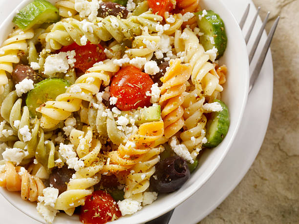

Greek Pasta Salad

Delicious Mediterranean flavors. Makes a very big portion, so perfect for a crowd or party in the summer.
A solid favorite at parties.
Be sure to use Kalamata olives rather than those tasteless California ripe olives. Big difference!
You will need:
- Red wine vinegar
- Garlic powder
- Dired basil
- Cooked elbow macaroni
- Olive oil
- Cherry tomatoes
- Sliced red peppers
- Crumbled feta cheese
- Whole can black olives
- Whisk olive oil, vinegar, garlic powder, basil, oregano, black pepper, and sugar together in a large bowl.
- Add cooked pasta, mushrooms, tomatoes, red peppers, feta cheese, green onions, olives, and pepperoni. Toss until evenly coated.
- Cover, and chill 2 hours or overnight.
- Serve and enjoy!